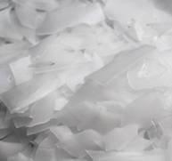

น้ำแข็งสี่เหลี่ยม (Cube)
- เหมาะสำหรับร้านอาหารและเครื่องดื่มค็อกเทล ทำน้ำปั่น กาแฟเย็น ชาเย็น
- เป็นที่นิยมใช้ในร้านอาหารชั้นนำ ร้านกาแฟ โรงแรมชั้นนำ ร้านอาหารหรู

น้ำแข็งถ้วยหลอด/น้ำแข็งกระสุน (Bullet)

- เหมาะสำหรับเครื่องดื่มเหล้า เบียร์ เช่นเดียวกับน้ำแข็งยูนิตและน้ำแข็งหลอด
- เป็นที่นิยมใช้ในร้านอาหารชั้นนำในยุโรป

น้ำแข็งเกร็ดกรอบ (Granular)

- เหมาะสำหรับร้านอาหาร, ร้านเครื่องดื่ม หรือ แช่อาหารสด
- เป็นที่นิยมใช้ในร้านอาหารประเภทไม่ขายแอลกอฮอล์ เพราะทำแข็งปนเล็ก ทำให้เครื่องดื่มเย็นเร็ว และร้านขายอาหารทะเล เพราะสามารถใช้แช่ อาหารทะเล

น้ำแข็งแผ่น (flake)

- เหมาะสำหรับใช้แช่อาหารสดเท่านั้น ไม่เหมาะนำมาบริโภค
- เป็นที่นิยมใช้ในอุตสาหกรรมเนื้อสัตว์ ห้องเย็นแช่อาหารสดโดยเฉพาะในต่างประเทศ

น้ำแข็งหลังเต่า (Crescent)

- เหมาะสำหรับโรมแรม หรือภัตตาคารชั้นนำ หรือผสมเครื่องดื่มค็อกเทล เหล้า เบียร์ รูปร่างสวยงาม
- ยังไม่เป็นที่นิยมแพร่หลายในประเทศไทย